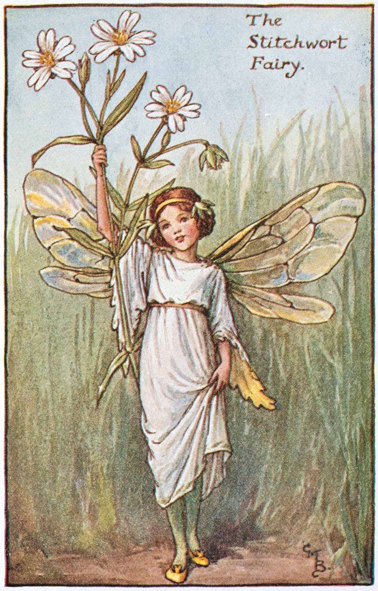
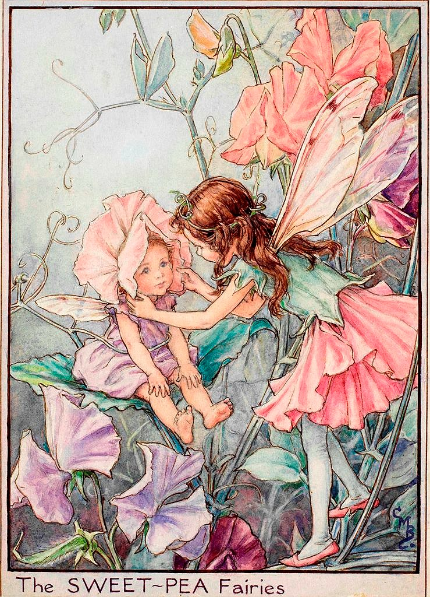

Like Charles van Sandwyk, I was drawn to Cicely Mary Barker because of the beauty of her botanically accurate illustrations. First published in 1923, Mary Barker's Flower Fairies are a set of 170 gorgeous hand drawn fairies. They are incredibly recognisable, and I would argue that they have helped to define our collective visualisation of what a fairy is in the modern West.
As a child, these illustrations were certainly what I pictured when playing pretend in my fairy garden at home. They are cherubic and cheeky, with perfectly realised movements that Mary Baker based on the real children at her sister's nursery school. I want the character that I create to be this mix of childlike wonder and grown up realism and I think that these fairies will be a really strong starting point from which to drawn that kind of wonder and beauty. I really cannot emphasise enough how much I love these fairies.
click here to learn more


make space!